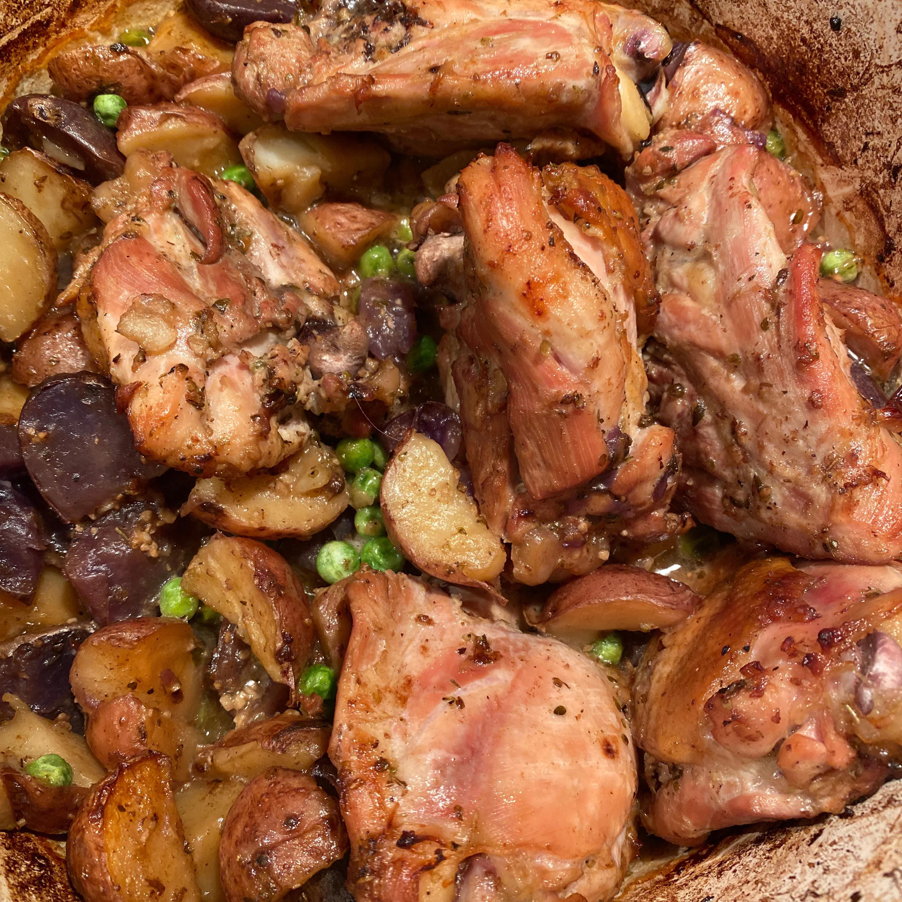

Classic Chicken Vesuvio

Description
This chicken vesuvio dish cooks in a luscious white wine sauce.
It starts on the stovetop and completes baking in the oven.
For even faster preparation, use an oven-safe skillet
Ingredients
- 10 skin-on, bone-in chicken thighs
- 1 ½ teaspoons dried oregano, divided
- 1 ½ teaspoons garlic powder, divided
- 1 teaspoon salt, or to taste
- ½ teaspoon ground black pepper
- 1 tablespoon grapeseed oil, or more as needed
- 1 ½ pounds baby potatoes, halved
- 2 cloves garlic, mincedz
- 1 ½ cups white wine, divided
- 1 ½ cups chicken broth, divided
- 2 tablespoons butter
- 2 tablespoons all-purpose flour
- ½ cup whipping cream
- 1 small lemon, juiced
- 1 cup frozen peas
Steps
- Preheat the oven to 375 degrees F (190 degrees C).
- Season chicken thighs with 1 teaspoon oregano, 1 teaspoon garlic powder, salt, and pepper.
- Heat a large, heavy skillet over medium-high heat and add grapeseed oil.
Brown chicken in the hot oil, 5 to 7 minutes. Transfer chicken pieces to a plate.
- Sprinkle potatoes with remaining 1/2 teaspoon oregano and 1/2 teaspoon garlic powder.
Add potatoes to the hot skillet and cook over medium-high heat, stirring occasionally to
ensure all sides are browned, 6 to 8 minutes. Transfer potatoes and chicken to a large
roasting pan.
- Cook minced garlic in the hot skillet over medium-high heat until golden brown, 1 to 2
minutes. Pour 1 cup white wine into the pan and bring to a boil while scraping the browned
bits off the bottom of the pan using a wooden spoon. Add 1 cup chicken broth.
Allow sauce to reduce, 7 to 10 minutes. Pour over chicken and potatoes.
- Bake in the preheated oven for 1 hour.
- During the last 25 minutes of baking, melt butter in a saucepan over medium-low heat.
Add flour and stir to create a roux. Add remaining 1/2 cup wine, 1/2 cup chicken broth,
and whipping cream. Stir until sauce has incorporated and thickened slightly, 7 to 10 minutes.
Add lemon juice. Set sauce aside.
- Stir peas into the roasting pan and continue baking until peas are heated through and chicken is no longer pink at the bone, about 15 minutes more. Remove from oven and pour sauce over chicken.